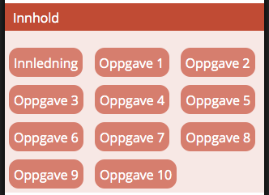

Innledning
Denne delen av kurset er lagt opp som en oppgave der en enkel nettside skal styles i flere steg
Krav
For å kunne løse oppgavene trengs det en pc med følgende installert:
- Ruby
- Bundler (Et ruby gem)
- Git
- Editor etter fritt valg, men WYSIWYG er ikke en mulighet på dette kurset. Personlig bruker jeg Sublime Text
- Jeg vil også anbefale at Firefox med Firebug er installert
Hva inneholder repoet?
- En Gemfile for å installerer alle avhengigheter til oppgaveløsningen
- Configurering av Sass/Compass
- Anbefalt filstruktur for CSS/Sass
- Alle nødvendige filer til oppgaveløsningen
Forberedelse til del 2
- Sørg for at kravene til pc er oppfylt
Områder det vil fokuseres på i innføringen/oppgaveløsningen
- Mobile first
- Responsivt design (Singularity)
- HTML5/CSS/Sass/Compass
- Fornuftig filstruktur
- Fornuftig navngiving av klasser
Oppgave 1
Kort teori
Mobile first er en ide om at utvikling av en webapp bør ta utgangspunkt i at en først produserer et design som fungerer for enheter med liten skjerm. Tanken er at et design som fungerer for små skjermer kan være et minimumsdesign som også kan tilbys enheter som mangler støtte for mer avansert funksjonalitet.
Oppgave
Åpne index.html i nettleseren og juster størrelsen på vinduet til noe i nærheten av størrelsen til en normal smarttelefon. Endre deretter fonttørrelse og linjehøyde på tekst i _base.scss til du oppnår noe du føler er godt lesbart når skjermen er liten. Noen elementtyper kan kanskje ha behov for margin i tillegg?
Oppgave 2
Kort teori
Å vedlikeholde stilark i et større prosjekt kan fort bli uoversiktelig når antallet linjer i filene øker. For å bedre oversikten er det en trend med å holde stilreglene modulære. Dette vil si at vi skiller ut stilreglene for regioner/moduler/elementer i mindre .scss-filer. De mindre filene blir så importert i stilarket.
Oppgave
Lag stilregler for navigasjonsmodulen (sass/modules/_navigation.scss). Ønsket er at oppsettet skal ligne på vedlagte skjermdump. 
Oppgave 3
Kort teori
Mange velger i dag å styre layout ved hjelp av forskjellige gridsystemer. Enten ved at de designer et eget eller bruker et eksisterende rammeverk. Et egenprodusert vil være godt tilpasset prosjektet og sannsynligvis lettere enn et rammeverk. Et rammeverk kan gi deg muligheter du ikke visste du trengte og vil ofte være vedlikeholdt av mange aktører. Vi vil bruke gridsystemet Singularity videre i oppgaveløsningen.
Oppgave
Juster størrelsen på browservinduet og finn bredden der du føler det er naturlig å flytte innholdet i aside opp ved siden av innholdet i main. Bruk så Singularity og Breakpoint til å sett opp en et gridsystem. Vurder om det er fornuftig å sette opp forskjellige grids ved forskjellige bredder.
Oppgave 4
Kort teori
Oppgave
Oppgave 5
Kort teori
Oppgave
Oppgave 6
Kort teori
Oppgave
Oppgave 7
Kort teori
Oppgave
Oppgave 8
Kort teori
Oppgave
Oppgave 9
Kort teori
Oppgave
Oppgave 10
Kort teori
Oppgave